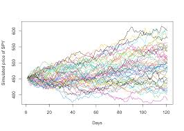

Pricing options with Black-Sholes-Merton and Monte Carlo in C++
During a elective course at ENSAE Paris as an Introduction to C++, my final project was to implement vanilla options’ pricing using the Black-Scholes-Merton formula and the Monte Carlo simulation approach. The main idea of the project was to use a parent class and then two derived that implemented each method.
Show the report of the project
Definition of the original class
The main class regroups all the parameters for the Black-Scholes model and coutains a function price() that will be defined later in both methods.
Show the main class
#include <iostream>
#include <cmath>
#include <random>
using namespace std;
class Class_Option {
protected:
double S0; // initial price
double K; // Strike Price
double T; // Maturity
double sigma; // Volatility
double r; // risk-free interest rate
bool type; // call=1 and put=0
public:
Class_Option(double S0, double K, double T, double sigma, double r, bool type); //Constructor definition
virtual double price() const = 0; //any derived class must implement this method to calculate the price of the option
virtual ~Class_Option() = default; //Ensures proper cleanup of derived objects when deleted through a base class pointer
};
//Initializes the attributes of the Option object with user-provided values
Class_Option::Class_Option(double S0, double K, double T, double sigma, double r, bool type):
S0(S0), K(K), T(T), sigma(sigma), r(r), type(type) {}Definition of the Black-Scholes-Merton class
This class inherits from the first one and implements the function price() using the Black-Scholes formula for the call price \(\boxed{c_t = S_t \mathcal{N}(d_1)-Ke^{-r(T-t)}\mathcal{N}(d_2)}\) with \[\begin{cases} d_1 = \frac{ln(S_t/K)+(r+\sigma^2/2)(T-t)}{\sigma \sqrt{T-t}} \\ d_2 = d_1 - \sigma \sqrt{T-t}\end{cases}.\] To compute the normal cdf we use the error function coded in the namespace std.
Show the BSM class
class Black_Scholes_Merton : public Class_Option {
private:
double callPrice() const;
double putPrice() const;
public:
Black_Scholes_Merton(double S0, double K, double T, double sigma, double r, bool type);
~Black_Scholes_Merton();
virtual double price() const;
};
Black_Scholes_Merton::Black_Scholes_Merton(double S0, double K, double T, double sigma, double r, bool type)
: Class_Option(S0, K, T, sigma, r, type) {};
Black_Scholes_Merton::~Black_Scholes_Merton() {}
double Black_Scholes_Merton::callPrice() const {
double d1 = (std::log(S0 / K) + (r + 0.5 * sigma * sigma) * T) / (sigma * std::sqrt(T));
double d2 = d1 - sigma * std::sqrt(T);
return S0 * std::erfc(-d1 / std::sqrt(2)) / 2 - K * std::exp(-r * T) * std::erfc(-d2 / std::sqrt(2)) / 2;
}
double Black_Scholes_Merton::putPrice() const {
double d1 = (std::log(S0 / K) + (r + 0.5 * sigma * sigma) * T) / (sigma * std::sqrt(T));
double d2 = d1 - sigma * std::sqrt(T);
return K * std::exp(-r * T) * std::erfc(d2 / std::sqrt(2)) / 2 - S0 * std::erfc(d1 / std::sqrt(2)) / 2;
}
double Black_Scholes_Merton::price() const {
if ((*this).type==1){return (*this).callPrice();}
else {return (*this).putPrice();}
}Definition of the Monte_Carlo class
Likewise, this class inherits from the first one and implements the price() function using Brownian Motion simulation. Indeed, we add an attributes which is the number of simulations that we do, and for each simulation we compute the final value of the Stochastic process of the stock following the dynamics of a Geometric Brownian Motion : \(\frac{dS_t}{S_t} = \mu dt + \sigma dW_t\), which leads under the risk-neutral measure to \[\boxed{S_T = S_te^{(r-\sigma^2/2)(T-t) + \sigma (W_T - W_t)}.}\] Therefore, we are not generating the whole path of the stock but only its final value thanks to a draw of a normal distribution \(\mathcal{N}(0,T-t).\) Then, we compute the payoff of the option and discount it to take the average as the option’s price.
Show the MC class
class Monte_Carlo : public Class_Option {
private:
int num_simulations;
public:
Monte_Carlo(double S0, double K, double T, double sigma, double r, bool type, int num_simulations);
double price() const override; //Monte Carlo pricing method
};
Monte_Carlo::Monte_Carlo(double S0, double K, double T, double sigma, double r, bool type, int num_simulations)
: Class_Option(S0, K, T, sigma, r, type), num_simulations(num_simulations) {}
double Monte_Carlo::price() const {
std::mt19937 generator(std::random_device{}());
std::normal_distribution<double> normal(0.0, 1.0);
double sum_payoffs = 0.0;
for (int i = 0; i < num_simulations; ++i) {
double Z = normal(generator);
double ST = S0 * std::exp((r - 0.5 * sigma * sigma) * T + sigma * std::sqrt(T) * Z);
double payoff = 0.0;
if (type) {
payoff = std::max(ST - K, 0.0);
} else {
payoff = std::max(K - ST, 0.0);
}
sum_payoffs += payoff;
}
return std::exp(-r * T) * (sum_payoffs / num_simulations);
}Comparison of the two methods
Finally, we can create the main function with the chosen parameters :\(S_0 = \$ 100, K = \$ 102, T = 1 \; \text{year}, \sigma = 0.2 \; \text{year}^{-1/2}, r = 0.05 \; \text{year}^{-1}.\) First, we compare the price of the call and the put option with both methods. Also, we verify the put-call parity using the formula from the BSM model and the difference of the simulated prices.
Show the computation of the prices
int main() {
double S0 = 100.0; // Initial price
double K = 102.0; // Strike price
double T = 1.0; // Time to maturity (1 year)
double sigma = 0.2; // Volatility
double r = 0.05; // Risk-free rate
bool type1 = true; // True: Call, False: Put
bool type2 = false; // True: Call, False: Put
int num_sim = 1000000 ; //number of simulation
Black_Scholes_Merton bsm_call(S0, K, T, sigma, r, type1);
double BSM_call_price = bsm_call.price();
Monte_Carlo mc_call(S0, K, T, sigma, r, type1, num_sim);
double MC_call_price = mc_call.price();
Black_Scholes_Merton bsm_put(S0, K, T, sigma, r, type2);
double BSM_put_price = bsm_put.price();
Monte_Carlo mc_put(S0, K, T, sigma, r, type2, num_sim);
double MC_put_price = mc_put.price();
double expectedParity = S0 - K * std::exp(-r * T);
// Test de tous les prix possibles
std::cout << "Black-Scholes-Merton Call Price: " << BSM_call_price << std::endl;
std::cout << "Monte Carlo Call Price: " << MC_call_price << std::endl << std::endl;
std::cout << "Black-Scholes Put Price: " << BSM_put_price << std::endl;
std::cout << "Monte Carlo Put Price: " << MC_put_price << std::endl << std::endl;
std::cout << "Expected Put-Call Parity (BSM formula for call - put) "<< expectedParity << std::endl;
std::cout << "Simulated Put-Call Parity (MC formula for call - put) "<< MC_call_price - MC_put_price << std::endl;
return 0;
}Here are the outputs that show that the Monte Carlo approach gives a good approximation of the Black-Scholes-Merton model.
Black-Scholes-Merton Call Price: 9.42337
Monte Carlo Call Price: 9.42634
Black-Scholes Put Price: 6.44877
Monte Carlo Put Price: 6.44635
Expected Put-Call Parity (BSM formula for call - put): 2.9746
Simulated Put-Call Parity (MC formula for call - put): 2.97999
Process returned 0 (0x0) execution time : 0.888 s
Press any key to continue.